地政学
ミラノはローマの政治首都とは違う位置から、北イタリアの資本、鉄道、見本市、欧州市場を束ねる。アルプス越えの回廊とポー平原の工業地帯が近く、ドイツ、スイス、フランス、地中海を結ぶ商業の判断が街に集まる。

🇮🇹 イタリア / ヨーロッパ / World City Atlas
北イタリアの金融と産業を束ね、ファッション、デザイン、カトリック遺産、移民労働、鉄道結節、食とオペラが高密度に重なるポー平原の都市。
都市の骨格
ミラノは首都ではないが、イタリア経済の意思決定を強く引き受ける。金融街、展示会場、工場地帯、大学、教会、劇場、移民の商店街が、路面電車と地下鉄の生活圏に折り重なる。
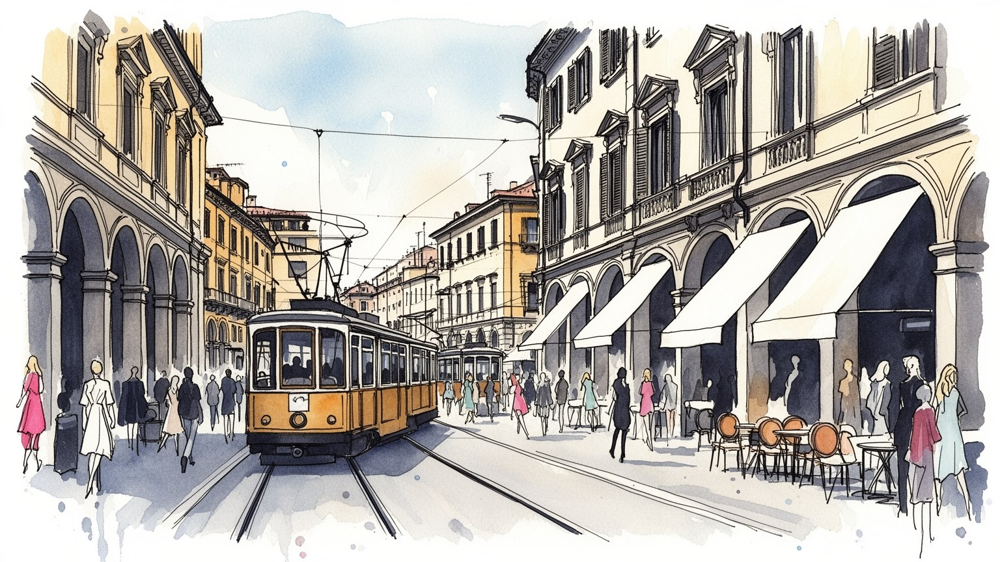
ミラノはローマの政治首都とは違う位置から、北イタリアの資本、鉄道、見本市、欧州市場を束ねる。アルプス越えの回廊とポー平原の工業地帯が近く、ドイツ、スイス、フランス、地中海を結ぶ商業の判断が街に集まる。
銀行、保険、証券、製造、出版、広告、デザイン、ファッション、医療、大学研究が雇用を作る。華やかなブランドの背後では、縫製、物流、清掃、警備、介護、配達、展示会設営を担う移民労働が都市の時間を支える。
ドゥオーモ、サンタンブロージョ、修道院、教区祭礼は、観光資源である前に街の暦を作る。スカラ座、デザイン週間、料理、出版、サッカー、多言語の礼拝空間が重なり、近代的な美意識と信仰が共存する都市です。
訪問者は大聖堂、ガレリア、ブレラ、ナヴィリオ、スカラ座、ショールームを巡る。住民には家賃、通勤、大気汚染、夏の暑さ、移民の包摂、学生の住まい、中心部の観光化が日々の条件として迫っている大都市です。
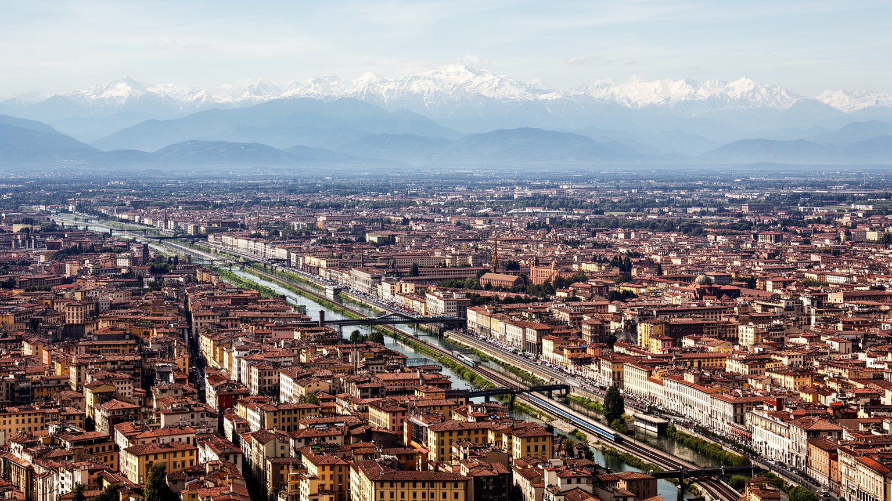
ミラノは海港を持たないが、北イタリアの地理を読むうえで最も重要な結節点の一つである。都市はポー平原の北側、アルプスへ向かう交通の入口にあり、スイス、フランス、ドイツ方面の鉄道と道路、ロンバルディアの工業都市、ジェノヴァやヴェネツィア方面の港湾回廊を結びつける。古代から市場と街道の集まる場所であり、近代以降は繊維、機械、化学、印刷、金融が平原の生産力を都市の資本へ変えた。大聖堂前の広場だけを見れば観光都市に見えるが、広域では倉庫、研究所、空港、見本市会場、郊外工場、大学キャンパスが連続している。ミラノの強さは、政治首都でなくても欧州の商業判断を集められる位置にある。アルプスを越える物流と、農業の豊かな平原、周辺の中小企業群、移民労働を吸収する大都市市場が近い。都市の景観もこの地理を反映し、中心部の歴史街区から少し離れると、鉄道操車場跡、環状道路、展示場、オフィス群、集合住宅が現れる。ミラノを読むには、ドゥオーモの垂直性と同じくらい、平原を横切る移動の水平性を見る必要がある。晴れた日に遠くの山並みが見えることは、都市が欧州内陸の回廊に開いていることを思い出させる。水路や運河の記憶も、内陸都市が外部とつながるために工夫してきた歴史を示す。地形は街の美しさだけでなく、産業の配置、通勤の距離、空気の滞留まで左右している。
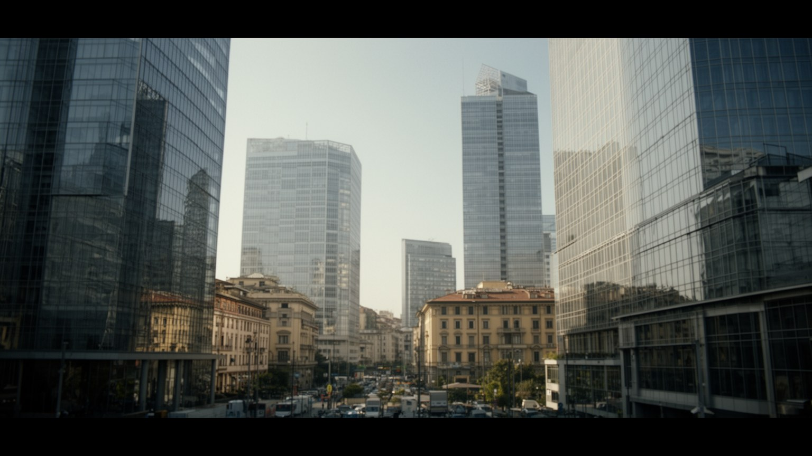
ミラノの経済は、華やかなファッションだけでなく、金融、製造、商業サービス、見本市、大学研究が重なる厚い産業基盤で成り立つ。銀行、保険、証券、法律、会計、広告、出版、コンサルティングは企業の意思決定を支え、周辺の機械、医薬、食品、家具、デザイン、精密部品の企業群と結びつく。ボルサ・イタリアーナに象徴される金融の機能は、ローマの政治とは異なる形で国の経済を動かす。ミラノの特徴は、資本が抽象的な数字に閉じず、展示会、工場、ショールーム、物流倉庫、大学の研究室へ近いことである。見本市は世界の買い手と地元企業を結び、商談、通訳、設営、ホテル、飲食、交通を巻き込む一時的な都市を作る。高収入の専門職が増える一方、清掃、配達、警備、介護、飲食、倉庫作業は賃金と住居費の差に悩む。経済都市としてのミラノを評価するなら、中心部のオフィス賃料やブランド価値だけでなく、郊外の工場、展示会の裏方、移民が担うサービス労働まで見る必要がある。資本、技能、信用、デザインの評判が同じ都市圏で循環することが、ミラノの競争力を作っている。だがその循環が生活の安定へ届かなければ、都市の豊かさは限られた層のものになってしまう。中小企業の承継、若い専門職の住まい、職業訓練の質も、金融都市の基盤を静かに左右する。数字の大きさだけでは、現場の技能が次世代へ渡るかどうかは見えない。
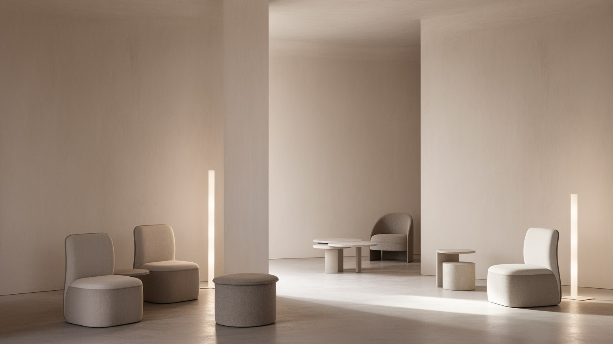
ミラノの名を世界に広げる最も強い言語は、ファッションとデザインである。モンテナポレオーネ周辺の高級店、ショールーム、デザイン事務所、写真スタジオ、編集部、モデル事務所、家具展示、見本市が近い距離で動き、都市そのものが商品を見せる舞台になる。ミラノ・ファッション・ウィークやサローネ・デル・モービレの時期には、ホテル、飲食店、交通、印刷、設営、通訳、警備、清掃までが一つの巨大なイベント産業として連動する。ここで重要なのは、華やかなランウェイの背後に素材、縫製、型紙、物流、販売、広報、撮影、照明、職人の技能があることだ。イタリアの美意識は手仕事の伝統だけでなく、工業製品を美しく使いやすく見せる近代的な設計思想とも結びつく。一方で、ブランド化された都市は排除も生む。中心部の家賃は上がり、小さな工房や学生、低所得の労働者は周縁へ押されやすい。観光客が高級通りを歩く一方、倉庫や縫製現場では移民労働者が納期に追われる。ミラノのデザイン文化を読むには、完成品の美しさだけでなく、それを作り、運び、販売し、廃棄する過程を見る必要がある。都市の洗練は表面の飾りではなく、素材、身体、労働、商談が積み重なった結果として現れる。さらに学校や若いスタジオは、伝統的な職人技とデジタル設計をつなぎ、新しい素材や持続可能性を試す場になっている。流行は短いが、技能を育てる時間は長い。
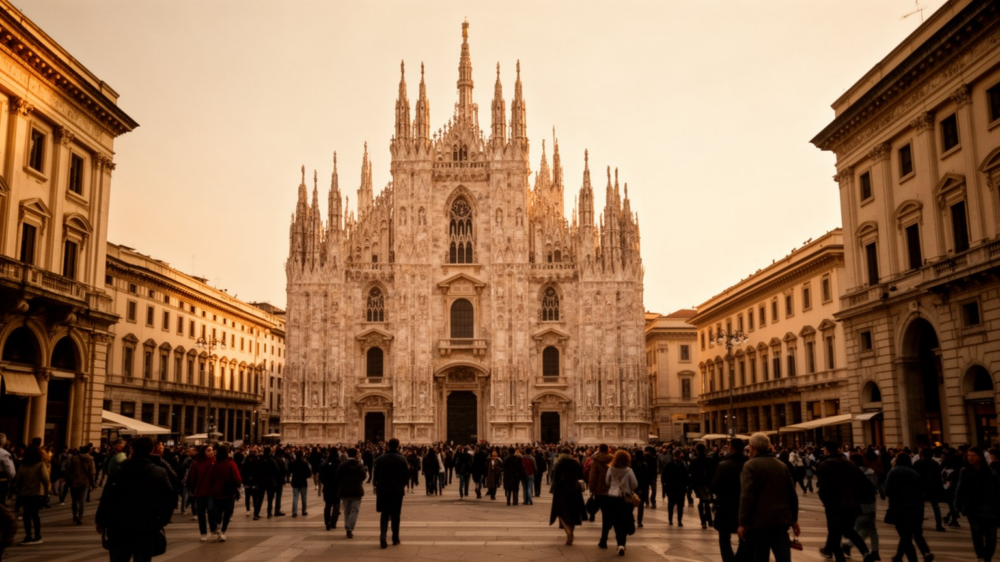
ミラノ大聖堂は観光名所である前に、都市の時間を長く束ねてきた信仰と権威の装置である。白い尖塔と彫刻は広場の視線を集め、周囲のガレリア、王宮、商店、地下鉄駅、デパートを一つの中心に結びつける。ここではカトリックの儀礼、観光、買い物、政治的集会、待ち合わせ、街頭演奏が同じ石畳の上で重なる。ミラノの宗教的記憶は大聖堂だけではない。サンタンブロージョ聖堂、修道院、教区教会、墓地、慈善団体、移民の礼拝空間が、都市の節目と社会支援を支えてきた。産業都市としての近代化が進んでも、聖人の日、葬儀、結婚式、復活祭、地域の祭礼は住民の暦に残る。都市遺産は美しい建物を保存するだけではなく、誰がその場所を使い、どのような祈りや記憶を持ち込むかで意味が変わる。観光化が進めば、中心部は写真を撮る場所として消費されやすいが、教会は静けさ、相談、言語を越えた共同体の場でもある。ミラノを読むうえでカトリック遺産は、過去の飾りではなく、現代の福祉、移民支援、都市の倫理感覚とつながる。大聖堂の影は、金融街やファッション街の近くにあり、利益と信仰、消費と慈善、記念物と生活を同時に考えさせる。修復を続ける職人、巡礼者を迎える係員、広場を清掃する人の仕事も、この遺産を日常へ戻している。建築の壮麗さは、維持する手間と信仰の継続によって保たれる。
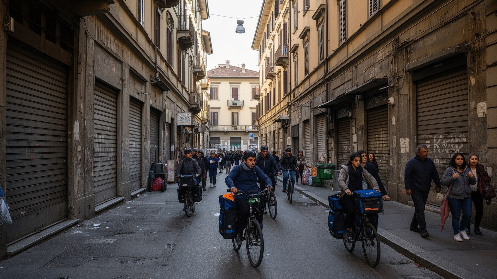
ミラノは北イタリアの機会を求めて人が集まる都市であり、移民労働なしには日常を維持できない。南イタリアからの移動の歴史に加え、近年はエジプト、中国、フィリピン、ペルー、ルーマニア、ウクライナ、バングラデシュなど多様な背景を持つ人々が、飲食、介護、清掃、建設、物流、縫製、小売、配達、家庭内労働、医療補助に関わる。高齢化した家庭を支える介護労働、深夜のレストラン、展示会後の清掃、郊外倉庫の仕分けは、都市の快適さを見えない場所から支える。移民は単なる労働力ではなく、教会、モスク、食料品店、送金サービス、学校、スポーツクラブ、地域祭礼を通じて都市文化を作る住民でもある。一方で、在留資格、言語、住宅差別、低賃金、不安定契約、教育格差は大きな壁になる。中心部の洗練されたイメージの背後で、長い通勤や狭い住まいを引き受ける人がいる。ミラノの国際性を観光客やブランドだけで測ると、この現実を見落とす。包摂された都市であるかどうかは、移民の子どもが学校で支援を受けられるか、病院や行政窓口で言葉が通じるか、宗教や食の習慣が尊重されるかで決まる。多文化性は広告ではなく、毎日の労働条件と近所の関係の中で試されている。市場の店先、週末の礼拝、学校の保護者会には、統計だけでは見えない交渉がある。都市が国際的であるほど、住民として受け入れる制度の細かさが問われる。
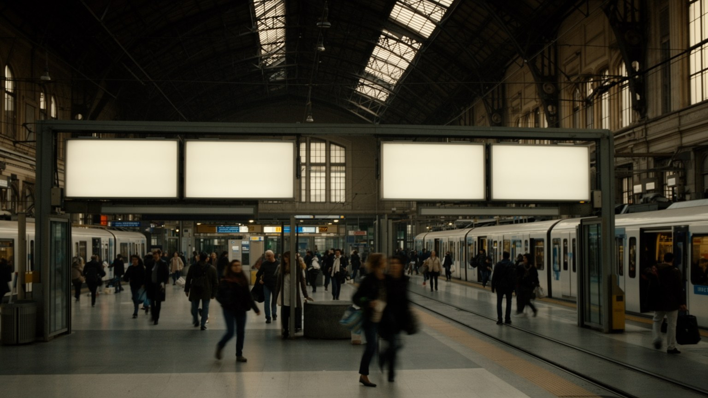
ミラノの都市体験は、鉄道と路面電車の音に強く結びついている。中央駅は壮大な駅舎であると同時に、国内高速鉄道、国際列車、地域列車、地下鉄、バスが交差する門であり、ビジネス客、学生、移民、観光客が毎日入れ替わる。地下鉄は中心部から郊外へ通勤圏を広げ、黄色い路面電車は街路の記憶を残しながら生活の細かな移動を支える。マルペンサ、リナーテ、ベルガモ方面の空港連絡は、ミラノを欧州と世界の見本市、金融、観光の流れへつなぐ。交通は便利さだけでなく、社会の差も映す。中心部に住める人は短い移動で職場や文化施設へ届くが、家賃の高騰で郊外へ移る人は通勤時間と交通費を負う。夜間の移動、バリアフリー、駅周辺の治安、観光客の混雑も生活の質を左右する。鉄道跡地の再開発や新線計画は、都市を更新する機会である一方、不動産価格を押し上げ、古い住民や小さな店を追い出す可能性もある。ミラノを交通都市として読むには、駅舎の美しさだけでなく、定期券を持つ労働者、展示会へ向かう荷物、空港へ急ぐ商談客、終電後の清掃を見る必要がある。移動の速さは都市の競争力だが、その速さを誰が使え、誰が支えているかが重要である。自転車道や歩行者空間の整備も、気候対策と生活の質を同時に変える。交通政策は単なる移動技術ではなく、住宅、健康、観光を結ぶ都市政策である。
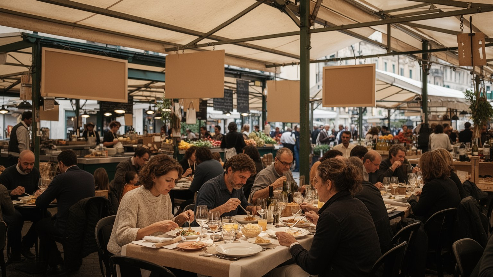
ミラノの食は、観光客が思うイタリア料理の陽気さだけでなく、北部の勤勉な都市生活と深く結びついている。リゾット・アッラ・ミラネーゼ、オッソブーコ、コトレッタ、パネットーネのような料理は、ポー平原の米、乳製品、肉、商業の歴史を映す。朝のバールで短くエスプレッソを飲み、昼に職場近くで簡単に食べ、夕方にアペリティーヴォで会話をする時間割は、仕事と社交をつなぐ都市の習慣である。ナヴィリオやブレラの店は観光地として目立つが、住宅地のパン屋、移民の食料品店、市場、社員食堂、大学周辺の安い店も同じように重要だ。食の多様化は移民の存在を可視化し、中国料理、エジプトのパン、南米の家庭料理、フィリピンの食材、ハラール対応の店が近所の風景を変えている。一方で中心部の飲食店は観光価格になりやすく、働く人の昼食や学生の生活費を圧迫することもある。ミラノの食を読むことは、高級レストランの評価だけでなく、誰が厨房で働き、どこから食材が届き、どの価格帯なら住民が使い続けられるかを見ることである。食は都市の洗練を見せる舞台であると同時に、労働、移民、家族、地域のつながりを毎日確認する場でもある。市場の仕入れ、昼休みの短さ、夕方の一杯は、効率的な経済都市にも休息と会話の余地が必要だと示している。小さな食卓にも都市の階層と連帯が映る。
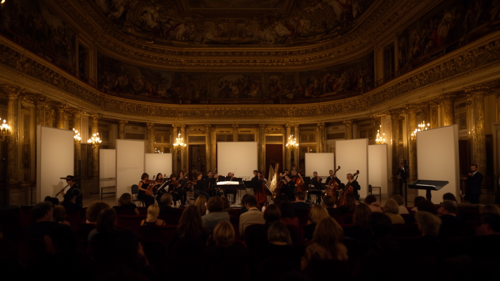
ミラノの文化を語るとき、スカラ座は欠かせない。劇場はオペラの殿堂であるだけでなく、都市が自分をどう見せ、どのような聴衆を育ててきたかを示す場所である。上演には歌手、指揮者、楽団、舞台美術、衣装、照明、翻訳、受付、警備、清掃が関わり、芸術は多くの専門労働で支えられる。ブレラ美術館、デザイン学校、出版社、ギャラリー、映画館、書店、大学は、ミラノを商業だけの都市にしない知的な厚みを作る。ここでは芸術と産業が近い。舞台衣装はファッションと接し、展覧会はデザインや広告と結び、出版は政治的議論や都市批評を支える。サッカー、音楽、クラブ文化、学生の活動も、都市の表現を広げる重要な要素である。しかし文化施設の中心化は、入場料、服装規範、教育格差、言語の壁によって参加できる人を分けることがある。文化都市であることは、名門劇場を持つことだけではない。若い作家や移民の表現、小さなライブ会場、学校の芸術教育、公共図書館がどれだけ開かれているかも問われる。ミラノの芸術は、格式と実験、商業と批評、国際性と地域の記憶が交差する場所で生きている。劇場の赤い客席と街角のポスターを同時に見ると、文化が権威であり仕事でもあることが分かる。観客になるための教育や時間、チケットを買う余裕も文化の条件であり、開かれた都市かどうかを測る物差しになる。
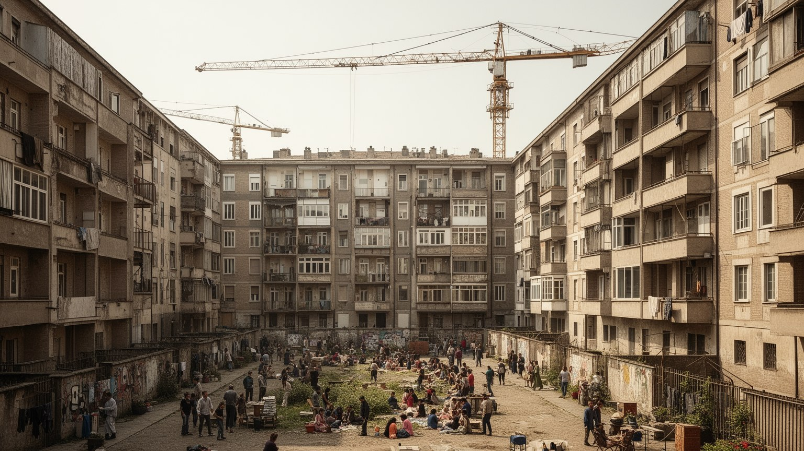
ミラノの生活で最も切実な問題の一つが住宅である。金融、ファッション、大学、観光、国際企業が集まるほど、中心部と交通の便利な地区の家賃は上がり、学生、若い労働者、移民、低所得世帯は周縁へ押されやすくなる。新しい高層住宅や再開発地区は都市のイメージを刷新し、防災性や緑地を改善することもあるが、同時に不動産投資の対象となり、住む場所を商品へ変える。郊外の公共住宅や古い集合住宅には、老朽化、失業、教育格差、治安への不安が集まりやすい。中心部では短期滞在向け住宅や観光需要が、住民向けの賃貸を減らすこともある。住宅問題は部屋の広さだけではない。職場までの距離、学校、保育、医療、夜の安全、交通費、冷暖房費、言語支援がすべて生活の質を左右する。ミラノは美しい都市であるが、その美しさを支える人が同じ都市に住み続けられなければ、都市の包容力は弱くなる。学生が学べる家賃、介護労働者が通える距離、移民家族が契約できる住まい、高齢者が孤立しない近所を確保できるかが、次のミラノの成熟を決める。住宅は個人の成功や失敗ではなく、労働市場、交通政策、観光政策、福祉を結ぶ都市の基盤である。空き家活用、公共住宅の改修、学生寮、家賃補助は、都市の競争力を支える投資でもある。住まいの安定がなければ、仕事も学びも文化参加も続きにくい。
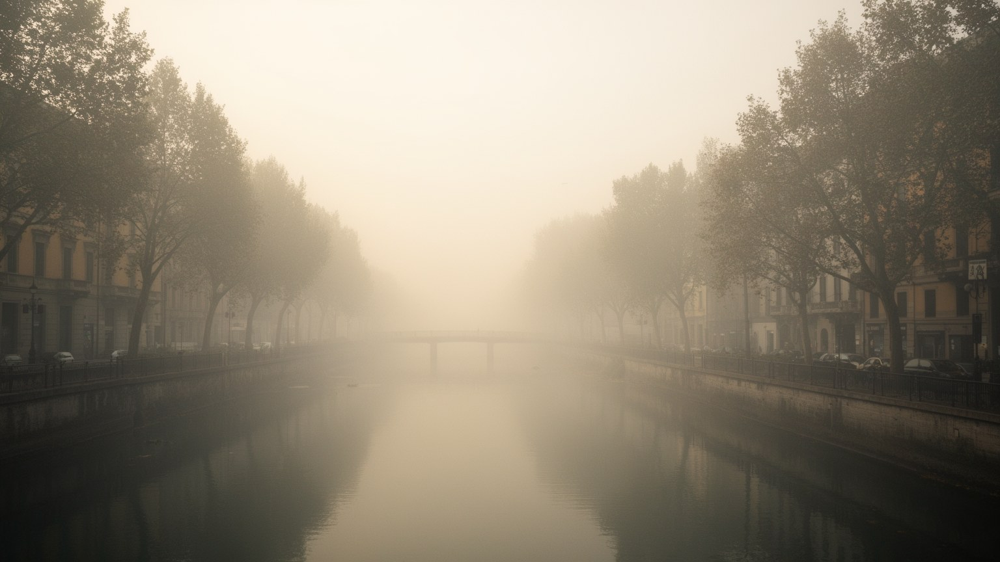
ミラノの気候は、地中海の明るいイメージだけでは理解できない。ポー平原の内陸に位置するため、夏は湿度が高く暑くなり、冬は霧や冷え込みがあり、大気が滞留しやすい。周辺には工業地帯、道路交通、暖房、農業活動が広がり、粒子状物質や窒素酸化物の問題は住民の健康に直結する。晴れた日の大聖堂や高層街区は美しいが、空気の悪さは喘息、高齢者、子ども、屋外労働者に重い負担をかける。気候変動によって熱波は強まり、冷房需要、電力消費、路面の熱、夜間の睡眠、学校や職場の環境に影響する。都市の緑化、自転車道、公共交通の改善、低排出区域、建物の断熱、日陰のある歩道は、景観整備ではなく健康政策でもある。ミラノを気候の視点で読むには、霧の詩情だけでなく、換気の悪い住宅、交通量の多い道路、倉庫で働く人、暑い日に配達する人を見なければならない。気候リスクは平均気温の問題ではなく、誰が涼しい家に住めるか、誰が汚れた空気の近くで働くかという格差の問題でもある。ポー平原の豊かさを支えた地理は、同時に大気を閉じ込める条件にもなる。都市の未来は、産業の力と健康な空気をどう両立させるかにかかっている。学校の校庭、街路樹、屋上緑化、古い住宅の断熱改修は、地味でも生活を守る対策になる。気候適応は中心部の景観ではなく、弱い人の健康から考える必要がある。
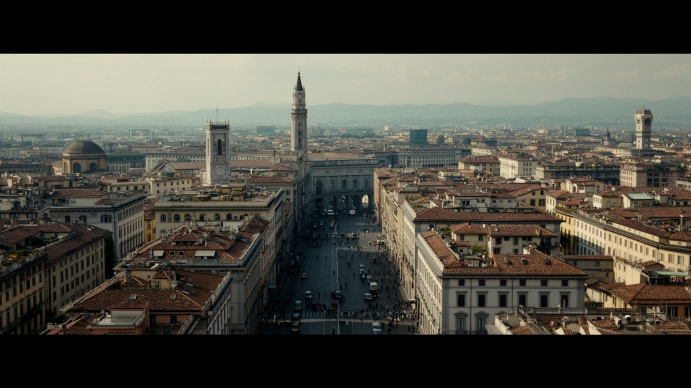
ミラノを一言で説明するなら、洗練された経済都市という言葉が浮かぶ。しかしその洗練は、金融街の資本、ファッションの評判、デザインの展示、ドゥオーモの信仰、スカラ座の格式、路面電車の日常、移民労働、郊外の住宅、ポー平原の大気が複雑に重なった結果である。観光客は大聖堂、ガレリア、ブレラ、ナヴィリオ、ショールームを短時間で巡れるが、住民にとってのミラノは家賃、通勤、学校、介護、空気の質、仕事の契約、近所の食堂として経験される。ローマが国家の政治を象徴するなら、ミラノは市場、企業、見本市、出版、デザインを通じて国際的な判断を引き寄せる。だが強い都市ほど、働く人を選別し、中心部を高価にし、文化を商品化する危険も大きい。ミラノを読むには、華やかなブランドの表面と、縫製、清掃、配達、介護、設営、研究、教育の現場を同時に見る必要がある。カトリックの遺産は過去の装飾ではなく、都市の倫理と福祉の記憶を残し、多文化化した社会に新しい役割を求められている。ポー平原の地理は物流と産業を支える一方、空気の滞留と暑さをもたらす。ミラノの重要性は、経済力だけでなく、都市の美しさ、信仰、移民、労働、住宅、気候が同じ街路で交差するところにある。そこを丁寧に読むと、現代ヨーロッパの豊かさと不安が見えてくる。洗練を持続させるには、見える中心だけでなく、周縁で暮らす人の住まいと健康を守る必要がある。